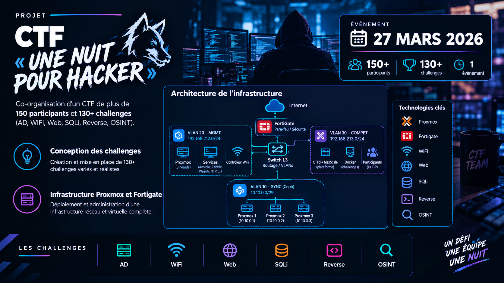

Manager en Ingénierie Informatique, Cybersécurité
Cursus Bac+5 orienté audit, pentest et sécurité des systèmes d'information, mené en alternance.
Projet : CTF « Une nuit pour hacker »
150+participants
130+challenges
Ce que j'ai fait
- Co-organisation de l'événement
- Conception de challenges : Active Directory, WiFi, Web, SQLi, Reverse, OSINT
- Infrastructure d'hébergement sous Proxmox, derrière un Fortigate
Difficultés et retour d'expérience
- J'ai déployé le stockage distribué Ceph avant de constituer le cluster Proxmox. Il aurait fallu faire l'inverse : monter le cluster d'abord, puis Ceph par-dessus.
- Le second switch fourni ne faisait pas de routage. J'ai apporté un pare-feu Fortigate, placé devant ce switch, pour assurer la solution de secours.
ProxmoxFortigateActive DirectoryWiFiWebSQLiReverseOSINT
Voir la page CTF →

Mémoire technique
« Dans quelle mesure les entreprises peuvent-elles reprendre le contrôle de leurs données ? »
Mémoire écrit en binôme. Il compare les alternatives (cloud européen, open source, auto-hébergement) et en démontre la faisabilité avec un déploiement Mailcow et Nextcloud sur un VPS OVH en France.
Conclusion : c'est possible et viable, à condition d'adapter la solution aux compétences et aux ressources de chaque organisation.
- Souveraineté numérique et dépendance aux acteurs du cloud
- Cadre du RGPD
- Alternatives de cloud souverain
Souveraineté numériqueRGPDMailcowNextcloudOVH

Le mémoire complet est disponible sur demande : contactez-moi.